60.0 s · 35 hard cuts, every 1–2.5 s · F1 Narrator voiceover (take 1), cuts on the spoken words · blocky Blender 3D · Montserrat Black captions with a black outline
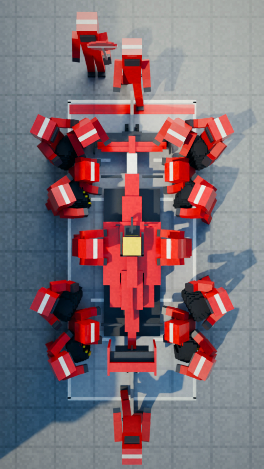
“in each other's way.”
Top-down: every mechanic in a fixed spot, nobody in anyone's way.
“So they called Ferrari. Ferrari's”
Close: the doctor's hand reaches for the phone (overlay: calling Ferrari).
“crew studied videos of the”
Ferrari's engineers study the hospital's handover footage.
“hospital's handovers and picked them apart.”
Screen close-up: the handover, problems circled in red (overlay).
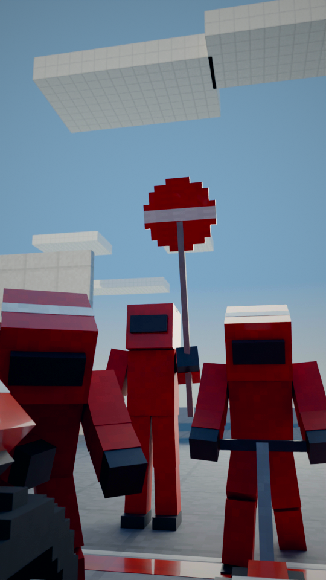
“The fix came straight from the pit lane:”
Driver's eye through the halo: the lollipop board ahead.
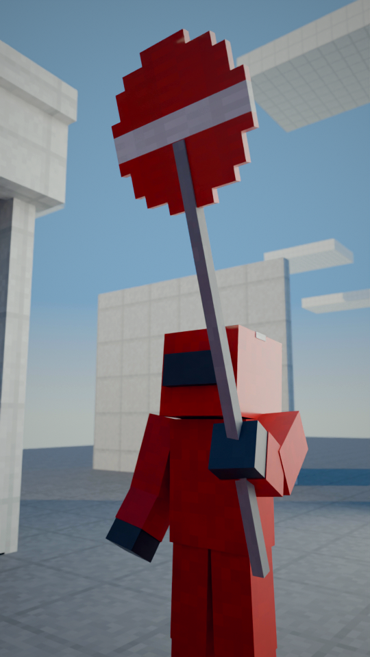
“one leader runs the handover,”
The lollipop man: one person in charge.
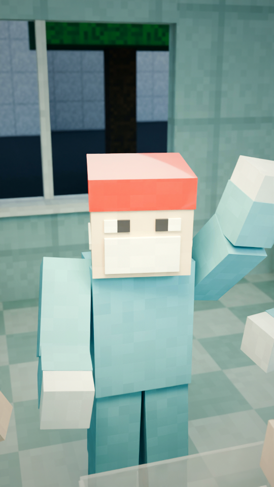
“like the lollipop man.”
The hospital's 'lollipop man': the anaesthetist in a red cap at the foot of the cot, hand raised, team turned to him.
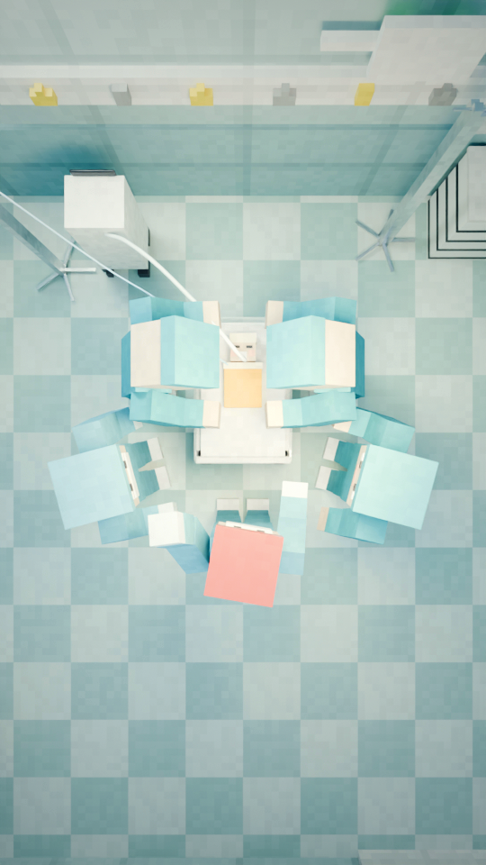
“Everyone gets one job in a”
Cutaway top-down: everyone in a fixed spot (numbered roles overlay).
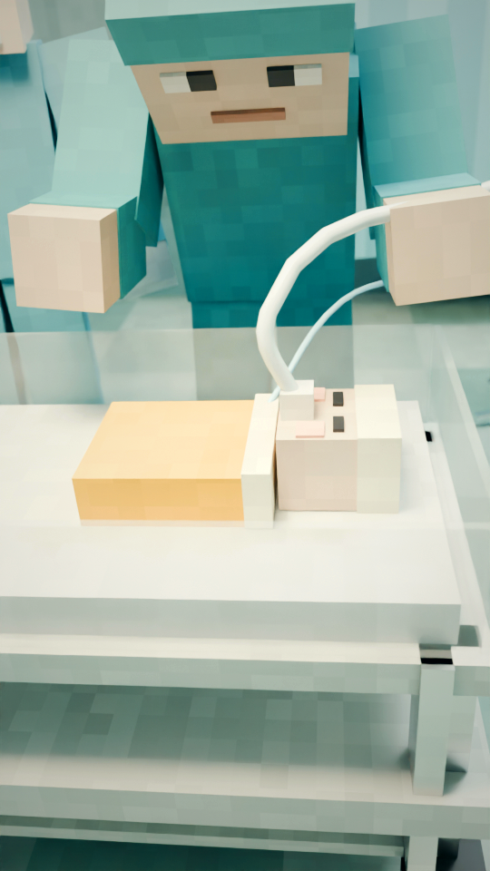
“fixed order, and a checklist”
Side angle: lines reconnected one by one, in order.
“makes sure nothing is forgotten.”
Macro: the checklist, red ticks.
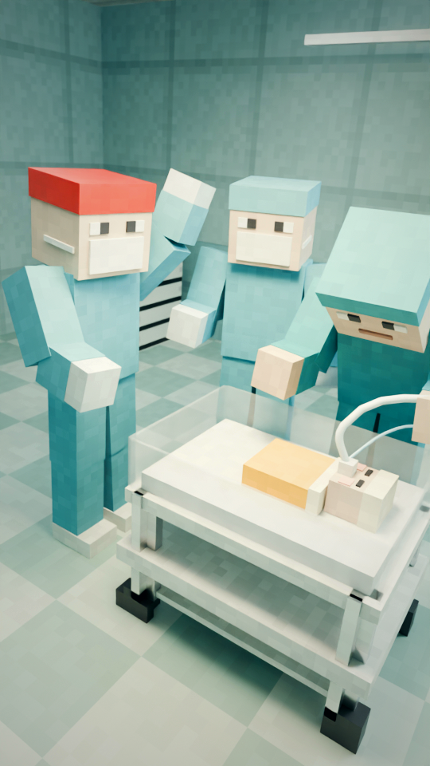
“And it worked.”
Calm, ordered handover. And it worked.
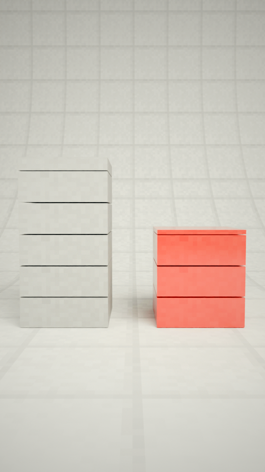
“Technical errors dropped by 42%, and”
Block chart: errors per handover, 5.42 blocks to 3.15 (overlay: -42%).
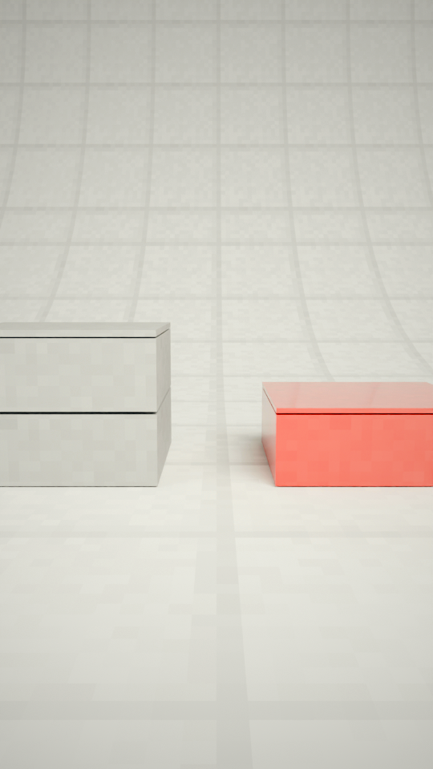
“missing information was almost cut in half. A”
Block chart: missing information, 2.09 to 1.07, almost half.
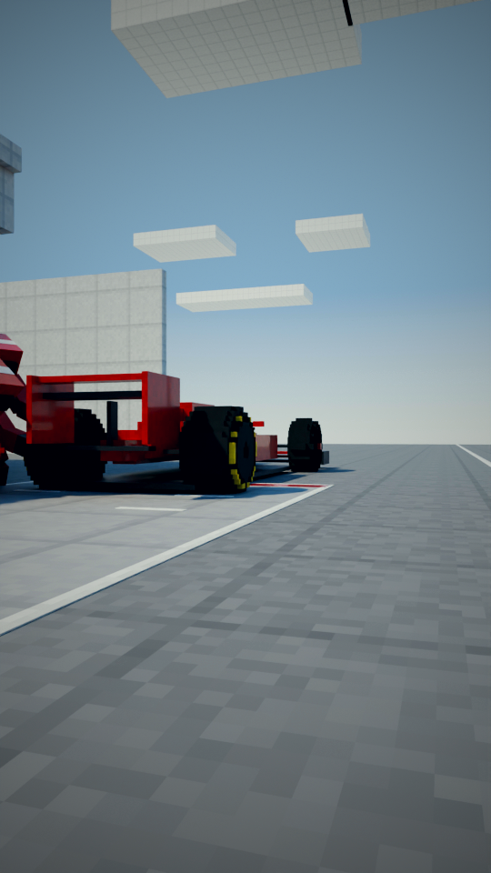
“sport obsessed with saving”
From behind the crew: board up, the car pulls out of the box and away toward the fast lane.
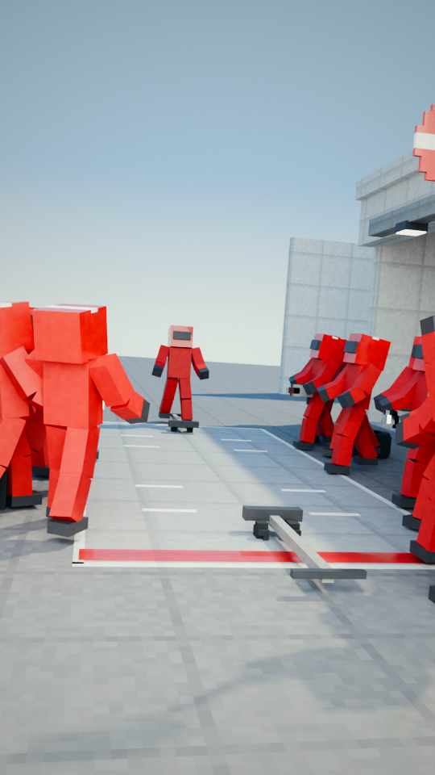
“tenths of a second taught doctors to”
The empty box: crew stepping back, old tyres on the ground, the board up.
“protect their smallest patients.”
Macro: the baby's hand around a gloved finger.
“So next time someone asks you…”
Back on the surgeon, pushing in: the loop back to the opening question.